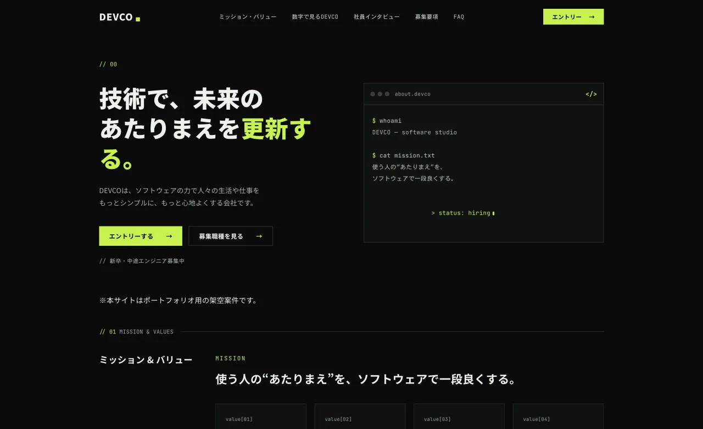
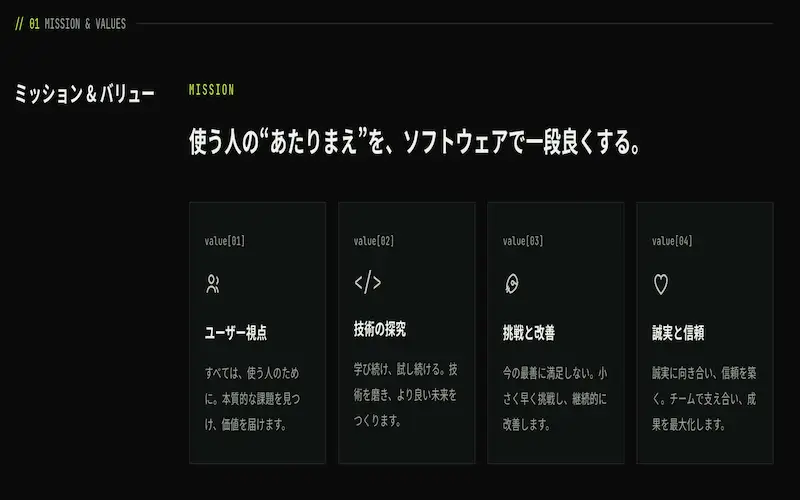
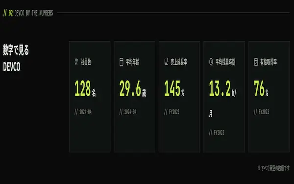
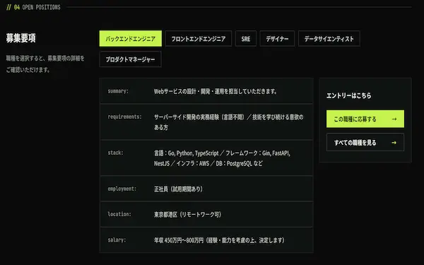

Case Study — Recruit
DEVCO採用サイト
ソフトウェアスタジオの採用サイト。ターミナル風のモチーフとアシッドグリーンで、エンジニアが「ここで働きたい」と感じるトーンを設計しました。架空案件として制作したものです。
デモサイトを見る
Overview
概要
| クライアント | ソフトウェアスタジオ「DEVCO」 |
|---|---|
| 種別 | 採用サイト（リクルート） |
| 担当範囲 | 情報設計 / デザイン / フロントエンド実装 |
| 期間 | 約1.5ヶ月 |
| 使用技術 | HTML / CSS(SCSS) / JavaScript |
Client & Target
クライアントとターゲット
クライアントは、新卒・中途のエンジニアを募集するソフトウェアスタジオ「DEVCO」。「技術で、未来のあたりまえを更新する。」という姿勢を、採用の場でも飾らずに伝えたい——そんな想定からはじめました。
届けたいのは、給与や知名度よりも「どう働くか・どんな技術文化か」で会社を選ぶエンジニア。うわべのやりがいではなく、開発の空気そのものから「ここで働きたい」と感じてもらうことを意識しました。
Problem & Objective
課題と目標
エンジニア採用は競合が多く、よくある「キラキラした社員写真と抽象的なメッセージ」の採用サイトでは、技術者の心になかなか届きません。会社の技術志向と空気感を、表面的でない形でまっすぐ伝える必要がありました。
そこで目標を二つに置きました。「開発の空気感をひと目で感じてもらうこと」、そして「迷わずエントリーまで進めること」。
Solution
解決アプローチ
ターミナル（コマンドライン）を主役にしたダークなUIで、エンジニアにとっての「日常」を画面そのものに落とし込みました。ミッション＆バリュー・数字で見る・社員インタビュー・募集要項・FAQ・エントリーまでを、一直線に読み進められる構成に。
アシッドグリーンの差し色は「ここぞ」のCTAだけに絞り、情報量が多くても迷わないように整理しました。

Design
デザインの工夫
見出しや数値には等幅書体（JetBrains Mono）を用い、コードエディタのような「開発者の景色」を画面に持ち込みました。本文は Noto Sans JP で可読性を確保し、ダーク背景×アシッドグリーンの一点集中で、真剣さとテンポの良さを両立させています。
華やかさより、技術への誠実さ。エンジニアが日々見ている画面に近い手触りを、いちばん大切にしました。


Development
実装のこだわり
スクロールに連動した控えめな演出と、ターミナルのプロンプトを思わせるモチーフで、世界観に手触りを持たせました。情報量の多い募集要項やFAQもスマートフォンで読みやすいよう調整し、エントリーボタンは常に手の届く位置に配置しています。
Result & Point
成果とポイント
目指したのは、応募の前に「この会社のスタンスが分かる」採用サイト。トーンと世界観で対象を惹きつけ、エントリーという一歩までを迷わせない——その導線の設計を意図しました。
見どころは、ターミナル風の世界観と、差し色を絞ったメリハリ。対象を明確に狙って作り込んだ、架空案件として制作した一案件です。